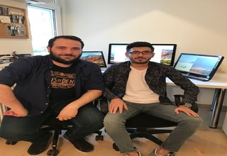

GÖKHAN KANDEMİR
1.SORU
*Mesleğinizi seçerken nasıl beklentileriniz vardı, severek ve isteyerek başladığınız bir meslek mi oldu sizin için?
CEVAP
İlk olarak ben bu mesleği seçerken bir beklenti içinde değildim çünkü neden ben çocukluğumdan beri elektroniğe böyle devrelere çok meraklıydım 4 yaşıda 5 yaşımdayken felan elektrik sayaçlarını sökmüştüm ondan kaynaklı olarak bir merakım vardı yani televizyon sökerdim bir şeyleri söküp bir şeyleri yapma merakındaydım O yüzden elektroniğe merakım vardı bundan dolayısıyla beni meslek lisesine yazdırdılar buda bana ne kattı elektronik bilgisi kattı Elektroniğe geçtikten sonra 1. sınıfta teknik liseye geçiş yaptım teknik lisede programcılıkla karşılaştım programcılıkla tanışınca nefret ettim hiç sevmedim ilk sınavım 0'dır hatta sonra bir hırsla böyle dedim ben bunu çözücem birazcık uğraştım sonra baktım çok hoşuma gitti ondan sonraki programayla uğraştığım her zaman tek düşüncem vardı ilerde yazılımcı olacam kendimce iyi bir programcı olmaya her bün bir gün daha yaklaştım diyordum saçma sapan bir modda ettim kendimi bu şekilde girişim olduğu için yazılıma herhangi bir beklentim yoktu fakat programlamanın ne olduğunu öğrendikten sonra kesinlikle başlangıcı orası diyorsak programlamayı çok sevdiğim bir meslek olarak sayabiliriz yani o şekilde başladım evet gerçekten çok sevdiğim bir meslek ve herzaman öğrendikçe sevdiğim meslek haline geldi.
2.SORU
*Mesleğinizi icra ederken sizi mutlu eden durumlar nelerdir ve işinizde neyi başardığınızda mutlu ve huzurlu olursunuz?
CEVAP
İlk olarak şunu söylemem lazım herhangi bir duruma gerek yok beni mutlu etmesi için ben bilgisayarın başına oturduğum zaman kod yazmaya başladığım anda çok mutlu oluyorum hani o kodun çalışması yada çalışmaması beni mutlu eden bir şey değil ben kod yazmayı seviyorum yeni bir şeyler öğrenmeyi seviyorum bu yüzden hani şu olduğunda ben kesin mutlu olurum diye söyleyemem ama gerçekten mutlu eden bir meslek yapıyorum Bir ürün çıkartırsan ortaya bir şey yaptın diyelim bir yazılım yaptın bunun çalışıyor olması beni mutlu ediyo ama daha büyük haz şurda oluyor mesela kafamda bir şey belirliyorum onu yaptğım anda aldığım haz dünyada aldığım bir çok hazdan daha üstün diyebilirim ama standart olarak senin yaptığın bir şeyi başlarının kullanıyor olması büyük mutluluk verici bir olay ki seni daha fazla gaza getiren daha fazla motive eden bir durum.
3.SORU
*İşe başladıktan sonra yeni bir programlama dili öğrenmek durumunda kaldınız mı, evet is ne gibi zorluklar yaşadınız?
CEVAP
Evet kaldım yeni bir programlama dili öğrenme isteği her zaman içimde olur her yazılımcıdada olması lazım eğer kendini hiç bir şekilde yeni bir programlama dili öğrenim ben demiyorsa o gerçekten bir yazılımcı değildir o gününü kurtarmaya çalışan parasını kazanan yazılımcı olarak nitelendirebiliriz. Ama yazılım dünyası öyle değil mesela bundan 14 yıl önce masaüstü uygulamaları programlama dilleri daha doğrusu mesela çok revaçtaydı ama şimdi iş biraz daha web'e kaydı cloud sisteme kayıyor yavaştan her şey cloud sistemi üzerinden çalışacak şuan baya bir şey çalışıyor ama artık biraz daha teknoloji değişiyor web baya bir ön plana çıkmıştı geçtiğimiz 10 yıl içerisinde daha sonra mobil platformlar revaçta olmaya başladı bu şekilde gidiyor şimdi biraz daha küçültüyorlar artırılmış gerçeklik işlemleri var Nedir bu VR gözlükleri aynı şekilde giyilebilir teknojilere kod yazmaya başlanıyor bunlarıda eski yazılmış programlama dilleriyle yazmak mümkünatı yok kendilerini geliştiriyorlar çeşitli yapılar ekleyerek ama yinede değişiyor yani teknoloji sen buna ayak uydurmak zorundasın.
4.SORU
*Yazılıma ne kadar zaman ayırıyorsun ve bu senin yaşantını nasıl etkiliyor ?
CEVAP
Yazılımcının bir dezavantajı var normalde mesela kimse bilgisayarla uğraşmayan biri evine iş getirme ihtimali olmayabilir ama yazılımcı da öyle değil kimi zaman otobüste çalışıyorsun kimi zaman kafede kimi zaman evde de çalışabiliyorsun ben günde yaklaşık ortalama uyuduğum süre 4 saat felan 4 saat uyuyorum geri kalan bütün süre bilgisayar başında geçiyor yani bunun belli bir kısmı şirket işleri bir kısmı kendi işlerimle geçiyor belli bir zaman önce kitap yazdım zaten ona yoğunlaşmıştım yani o tamamem senin bu işi ne kadar sevdiğine bağlı ben çok seviyorum yani dünyaya bir kere daha gelsem yine yazılımcı olurdum yazılımcı olmak isterim daha doğrusu yada şunu söyleyebilirim gönül verdiğim bir meslek bu meslek onun harici eve sürekli iş getiriyorum tabikide eşim var yakın zamanda çocuğum da olacak belli bir zaman onla vakit geçirdikten sonra tekrar dan işimin başına geliyorum yada en büyük etkileyen şey şu internette görmüştüm mesela sevgililer uzanıyorlar ondan sonra adam düşüncelere dalmış yukarıya bakıyor kız diyor ben acaba ne yaptım adamın düşündüğü ise şu bu kod neden çalışmadı bu çok fazla oluyor bunu direk anlayacaksın çünkü bir şey çalışmayınca kafana takılıyor bu takılan şey kafana bazen asabiyet getiriyor bazen seni sinir ediyor ve sinirleniyorsun genelde yazılımcılarda sinirlilik durumu çok fazla var genellikle gergin adamlar oluyorlar ya buda tecrübe ile azalıyor çünkü sen bir şey öğreniyorsun hata çıkıyor hatayı nasıl çözeceğini biliyorsun sakin kalıyorsun ama ilk başta bilgin az olduğundan bu imkansız Allah kahretsin niye çalışmadı bu diye saatlerce düşünebilirsin bü yüzden çok etkileyebiliyor seni özel hayatını bu şekilde etkliyor.
5.SORU
*Ülkemizdeki yazılım sektörü ile ilgili konuşmak gerekirse...
CEVAP
Yavaş yavaş çok yükselen bir yazılımcı popülasyonu var bu işin eğitimini almış olanlarda var alaylı olarak tabir ettiğimiz kitlede var ama şöyle bir problem var alaylı olarak ve yeni yetişen kitle bizim Türk milletini özelliklerinden kaynaklı olarak ne kitap okumayı seviyorlar nede ingilizce öğrenmeyi istiyorlar ama ülkemizde çok fazla kaynak yok bu işi anlatan kaynak yok kurulma amacıda bu zaten onun haricinde bu kitabı yazma amacımda o codeigniter Türkçe bir kaynak yok bundan dolayıda doğal olaraktan ve aslında açık yani ciddi bir açık kimse araştırmayı seviyoruz ama kopyala yapıştırıyoruz ingilizce çat pat translate'den çeviriyorlar ondan sonra buluyorlar bir şeyler ondan sonra onu koplayıp yapıştırıyor ama o kodun ne işe yaradığını bilmiyor bu bizim yazlımızın yazılım sektörünün kalitesini birazcık düşürüyor aslında birazcık kendisine yatırım yapsa ne gibi inglizce öğrense kitap okumayı öğrense bu sefer ne olucak daha iyi daha kaliteli işler çıkartıcak ortaya ama malasef çok fazla yok bunu yıkmaya çalışıyoruz ama 3-5 kişidir bir çok kişi yıkmaya çalışıyor ben kendi adıma söyliyim bir çok insanla sohbet ediyoruz işte kablosuzkedi diye grubumuz var insanlara bir şekilde sorular soruyorlar cevap veriyorum ama kesinlikle hazır kod vermiyorum mesela bana sorulan soruda yada sorabileceği belki 3 yıl sonra sorabileceği içeren kodları var belki belkide yoktur bilemiyorum Onlara direk verebilirim ama bu olmaz bu sefer internettten bulup kopyala yapıştır yapmaktan çok fazla bir şeyi yoktur kişinin birazcık kendini zorlaması lazım kendisini zorlayınca kendiliğinden öğreniliyor zaten
6.SORU
*Başkalarının yaptığı kodları alıp okuyormuyum?
CEVAP
Evet çok fazla yapıyorum çünkü bir insanın kodunu okumak bir kitap okumak gibi bir şeydir neden çünkü yani ben bugün bir uygulama yazmaya kalkışsam sen yapmaya kalkışsan ahmet mehmet kim yazarsa yazsın fark etmez bir kod yazmaya kalktığında birbirinden farklı kodlarla yazıyorsun ve bu doğal olarak düşünce yapını düşünme biçimini ve bunu uygulama biçimini çok fazla ilgilendiren bir şey kod ona göre çıkıyor sen başka birinin kodunu okuduğun zaman kodu değilde onun düşünce biçimini alıyorsun mantığını alıyorsun bu çok önemli bir şey bu kitap okumaya benziyor nasıl bir kitap okuduğunda yazarın stlini alıyorsun anlatmak istediğini mesela bir paragraf okuduğun zaman diyorsun ki bu bizim yazarın kalemine benziyor gibi cümleler kurarsın neden çünkü biliyorsun adamın kullandığı bir stlili var stili kapmak önemli olan şey o yüzden ben çok fazla insanların kodunu incelerim birde şu var yazılımcılarda bizim ülkemizde daha fazla var paylaşmayı pek sevmiyorlar şöyle garip şey var mesela benim kardeşimde söylüyordu abi sen bunları paylaşıyorsunda bunları öğrenen adam senin ekmeğine taş koymazmı ben 17 yıldır bu işi yapıyorum 13 yaşında başladım şuan 30 yaşındayım yurt dışındada çalıştım yani gayet çalışma performansım ve kariyerim aslında gayet yerli yerinde şimdi onu geçtim benim 17 yıl boyunca karşılaştığım hatalar problemler sorunlar ve bunları çözme tecrübem var bu adam benim öğretiklerimle bütün problemlerle karşılaşcak diye bir durum yok zaten tecrübeyi de tecrübe yapan senin karşılaştığın sorunlar yani adam 30 günde 1 ayda 1 yılda çalışarak iş yaparak seviyeme zaten gelemez belki yaptığım işi temel seviyede yapabilir ama bu iş bir üst seviye profesyoneliğe çıktığı zaman işte orda düşünmeye başlar burda napıcam diye tecrübeli bir adamda bu olmaz adam projeyi alır almaz direk kafasında tık tık şurası şöyle olacak burası böyle olacak diye oturtmaya başlar bizim ülkemizde bu çok fazla malasef var çünkü herkes kıskanıyor ben daha iyiyim ben daha iyiyim diye ama benden daha iyi olabilirsin ol yani daha iyi ol ben senden bir şey öğrenim direk Türkçe olarak öğrenilebilcek bir adam var bu benim çok hoşuma gider ama paylaşmayı sevmiyor yazılımcı kitlesi genelde buda çok yanlış bir olay ülkemizdeki yazılımcıların bence büyük bir çoğunluğunun en büyük problemi bu insalar şirket için stajerlere çok fazla bilgi göstermiyor bilgi saklıyor eksik bilgi veriyor yanlış bilgi veriyor adam yanlış şekilde yönleniyor yönlerdime konusundada büyük bir sıkıntı oluyor yazılıma gönül vermiş bir adam mobil mi öğremim web mi öğrenim bunların hepsinin bir sırası var algoritmayı oturtunmu gider veri yapılanma oturt ondan sonra git yani gideceksen mühendislikte bu böyledir bunlar verilir zaten bu işin mutfağı burdan başlıyor hiç olmazsa ondan dolayıda işte bence ülkemizdeki en büyük problemlerden biride malasef bu kimse paylaşmayı sevmiyor paylaşan çok fazla adam yok youtube de görüyoruz bir çok kanal var insalara anlatıyor bazılarıda sadece anlatmak için anlatıyor işte burası böyle olsun mesela videolardan kazanaları görüyorlar ben de parayı burdan kazanırım diye düşünenler var burda tabi yanlış.

TEŞEKKÜR EDERİZ.